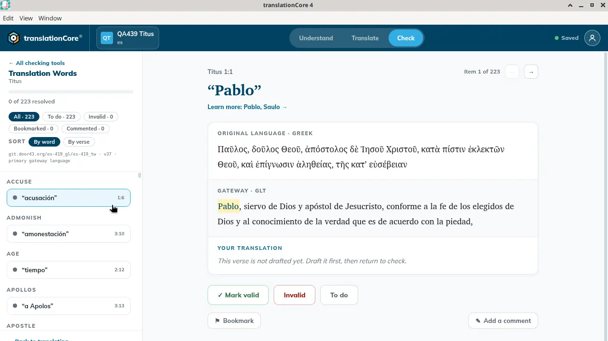
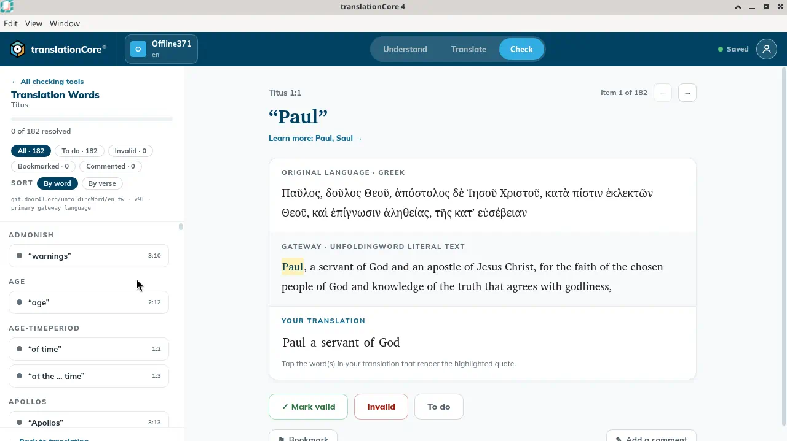
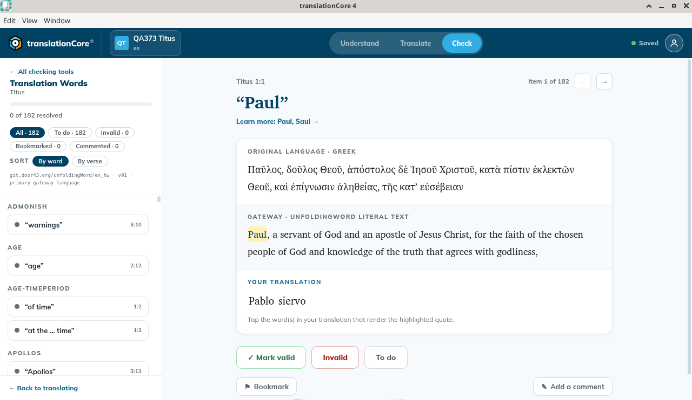

Check with Translation Words
Check every key term in the book against its definition, so important words are translated accurately and consistently.
Where in the app: Check › Translation Words card
What it is
The Translation Words tool lists every occurrence of a key term (such as God, grace, apostle) in the book. For each, you find how you translated it and decide if it is right.
When to use it
To make sure key terms are consistent across the book.
Step by step
- Click Check, then the Translation Words card. If the last checking tool you used opens instead of the list, click ← All checking tools.
- In the rail, next to Sort, click By word to see all occurrences of one term together (it is selected at first), or By verse to go through the book in order.
- Read the term. Click its "Learn more" link for the full article.
- If the verse is drafted, tap the word or words in Your translation that render the term. If it is not, the pane says to draft it first and come back.
- Decide: ✓ Mark valid, Invalid or To do.
- Marking an item does not move you on. Click the → arrow at the top right of the item (above the quote) to go to the next item.
What you should see
- The item shows the term Pablo, Learn more: Pablo, Saulo, the Greek text, and the gateway text labeled GLT with Pablo highlighted. Your translation says "This verse is not drafted yet. Draft it first, then return to check."
- Next to Sort in the rail are two buttons: By word (all occurrences of a term together, selected at first) and By verse.
Screenshots

Screenshot comingTranslation Words on Sample Titus, sorted By word. Item 1 of 223 is Pablo. The verse is not drafted yet.
img/ck-translation-words-1.png
Screenshot comingSample English Titus, Item 1 of 182, term Paul. Gateway highlights Paul. Your translation reads Paul a servant of God, without the comma or the period. Nothing was marked.
img/ck-translation-words-2.png
Screenshot comingSample Titus: Translation Words, Item 1 of 182, Paul (Titus 1:1), Learn more: Paul, Saul →. Gateway highlights Paul. Your translation reads Pablo siervo. Sorted By word; the rail starts at Admonish.
img/ck-translation-words-3.pngTips
- By word is the fastest way to catch inconsistent renderings: go through all "grace" items one after another.
- On Sample English the first item is Titus 1:1, "Paul", Learn more: Paul, Saul. The resource line is git.door43.org/unfoldingWord/en_tw · v91 · primary gateway language. Filters read All · 182, To do · 182, Invalid · 0. By word is selected, and the visible rail starts at Admonish while Paul is the open item. The gateway pane is labeled Gateway · unfoldingWord Literal Text, and Paul is highlighted. Greek is shown and is not highlighted. Your translation reads "Paul a servant of God". On Translate the same verse is "Paul, a servant of God." The comma and the period are not in the check pane. Nothing was tapped or marked.
- Known issue: The term is highlighted in the gateway pane (here labeled GLT). The Greek pane shows the verse but does not highlight the term.
- After you go to Translate and back to Check, tC4 reopens Translation Words where you were.
- Known issue: With By word, the open item and the rail can disagree. On Sample Titus the open item was Paul, but the rail started at Admonish and did not show Paul as selected. Screenshot 1 (an earlier build) shows the same thing with Pablo.
Known limits
- None beyond the general check limits and the known issues under Tips.